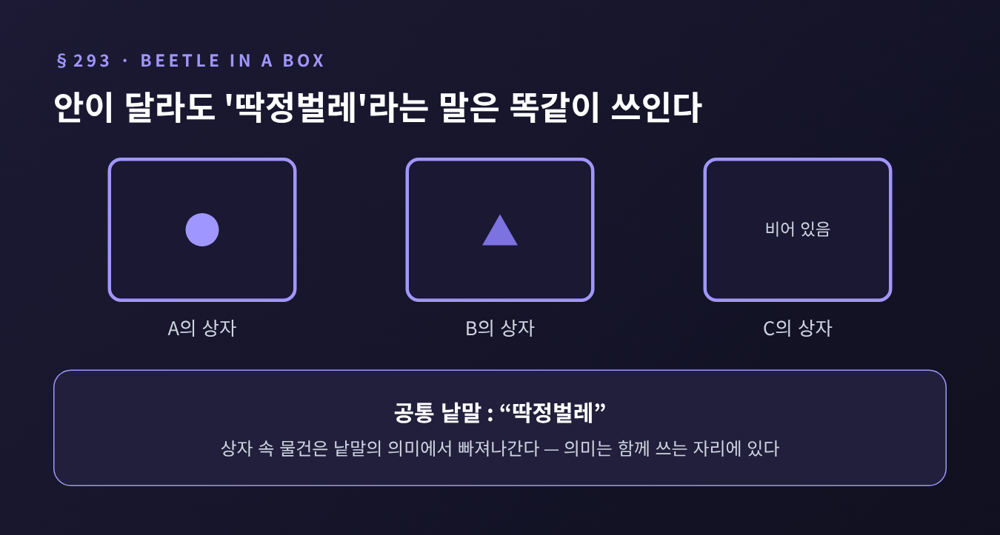

[철학/인문] 비트겐슈타인 『철학적 탐구』 243~315절
이번 글에서는 비트겐슈타인의 사적 언어 논증을 정리해 보겠습니다.
나만 아는 감각에 나만 아는 이름을 붙여 쓰는 언어가 가능한가, 이 물음이 출발점입니다.
먼저 결론부터 말씀드리면, 비트겐슈타인은 불가능하다고 보았고 학자들은 그 이유를 어떻게 읽을지를 두고 지금도 나뉩니다.
사적 언어는 비밀 암호와 다릅니다.
암호는 열쇠만 있으면 남이 풀 수 있습니다. 비트겐슈타인이 겨냥한 것은 원리상 화자 본인만 이해할 수 있는 언어입니다.
그 낱말들은 화자의 직접적인 내적 경험, 곧 본인만 알 수 있는 감각을 가리킵니다.
이 구도의 뒤편에는 데카르트 이래의 익숙한 그림이 있습니다. 경험은 내 안에 있고, 남은 그것을 볼 수 없다는 그림입니다.
언뜻 당연해 보입니다. 비트겐슈타인은 바로 이 당연함을 의심합니다.
참고로 이 대목을 흔히 '논증'이라 부르지만, 그 이름은 비트겐슈타인이 붙인 것이 아니라 후대 해석자들이 붙인 것입니다. 한 줄로 이어진 증명이라기보다 여러 장면이 겹쳐진 글이라는 점을 기억해 두시면 좋겠습니다.
사적 언어를 의심하는 첫 단서는 감각어를 우리가 어떻게 배우는가에 있습니다.
아이가 넘어져 울면 어른이 달려와 말을 가르칩니다. 처음에는 감탄사를, 나중에는 문장을 가르칩니다.
비트겐슈타인은 이렇게 말합니다. 감각을 가리키는 낱말은 감각의 자연스러운 표현과 이어져 있고, 그 표현을 대신해 쓰인다는 것입니다.
그러니 "아프다"는 울음을 관찰해 기술하는 말이 아닙니다. 울음 자리에 들어선 새 표현입니다.
246절에서는 한 걸음 더 나아갑니다. 나는 내 고통을 '아는' 것이 아니라 그저 '가질' 뿐이고, 의심이 말이 되는 것은 남의 고통에 대해서뿐이라고 합니다.
감각어는 처음부터 공적인 자리에서 태어난다는 이야기입니다.
핵심 장면은 258절의 일기입니다.
어떤 감각이 찾아올 때마다 달력에 'S'라고 적는 상황을 상상합니다. 이 기호의 뜻은 말로 정의할 수 없습니다. 오직 감각을 향해 속으로 '이것'이라고 가리키는 것이 정의입니다.
문제는 다음 날입니다. 비슷한 감각이 왔을 때 나는 'S'를 다시 적습니다. 그런데 그게 같은 감각이 맞는지 무엇으로 확인합니까.
내 인상 말고는 기댈 것이 없습니다. 비트겐슈타인의 진단은 이렇습니다. 내게 옳아 보이는 것이 곧 옳은 것이 된다면, 여기서는 '옳다'를 말할 수 없다는 것입니다.
이 지점에서 '기억하면 되지 않느냐'는 반문이 나옵니다. 265절은 이를 이렇게 받아칩니다. 같은 신문을 여러 부 사서 기사가 사실인지 확인하는 것과 같다고요. 기억이 기억을 확인해 줄 뿐입니다.
중요한 것은 말의 규칙에는 '옳음'과 '옳아 보임'의 틈이 있어야 한다는 점입니다. 틈이 있어야 틀릴 수 있고, 틀릴 수 있어야 맞는다는 말도 의미를 얻습니다. 사적 언어에서는 그 틈이 닫혀 버립니다.
한 가지 더 있습니다. 269~271절에서 일기를 쓰는 사람이 'S'가 나타날 때마다 혈압계 수치가 오른다는 것을 단서로 삼는다고 해 봅니다. 이러면 기호의 일관성은 얻지만, 그 순간 뜻은 혈압계라는 공적 대상에 기대게 됩니다. 사적인 감각 자체는 하는 일이 없습니다.
가장 널리 알려진 비유가 이어서 나옵니다.
모든 사람이 상자를 하나씩 갖고 있고, 안에 든 것을 '딱정벌레'라 부릅니다. 남의 상자는 들여다볼 수 없습니다. 각자 자기 상자만 보고 딱정벌레가 무엇인지 안다고 말합니다.
상자 속 물건은 사람마다 다를 수 있습니다. 계속 변해도 되고, 아예 비어 있어도 됩니다.
그래도 '딱정벌레'라는 낱말은 이 사람들 사이에서 쓰임을 가질 수 있습니다. 다만 그 낱말은 상자 속 물건의 이름이 될 수 없습니다. 사적인 대상은 무관한 것으로 고려에서 빠져나갑니다.

'고통'이라는 낱말에 옮겨 보겠습니다. 만약 "고통"이 내 안의 어떤 대상을 가리키는 이름이라면, 그 대상이 무엇이든 우리의 대화에는 아무 영향이 없습니다. 그렇다면 고통이라는 낱말이 의미를 갖는 곳은 상자 속이 아니라 우리가 함께 쓰는 자리라는 이야기가 됩니다.
여기서 조심할 점이 있습니다. 이 비유를 "마음속 감각은 없다"는 주장으로 읽어도 되는가에 대해서는 해석이 갈립니다. 낱말의 의미가 사적 대상에 의존하지 않는다는 말과, 사적 대상이 없다는 말은 같은 말이 아닙니다. 어느 쪽으로 읽을지에 따라 비트겐슈타인의 인상이 사뭇 달라집니다. 비유의 관련성 자체가 여전히 학계에서 논쟁 중이라는 평가도 있습니다.
사적 언어 논증은 허공에서 나오지 않습니다. 앞선 규칙 따르기 대목이 토대를 이룹니다.
185절에 이런 학생이 나옵니다. "+2"를 계속하라는 말에 1000 다음에 1004, 1008, 1012를 쓰고는, 지적을 받자 "같은 방식으로 계속했다"고 대답합니다.
201절의 역설은 이렇습니다. 어떤 행동이든 규칙에 맞는 것으로도, 어긋나는 것으로도 해석할 수 있다면 규칙이 행동을 결정한다고 말할 수 있느냐는 것입니다.
비트겐슈타인은 곧바로 다음 문단에서 이 역설을 오해라며 물리칩니다. 그리고 202절에서는 규칙을 '사적으로' 따르는 것은 불가능하다고 말합니다.
일기의 'S'는 이 문제의 가장 극단적인 사례입니다. 규칙을 따르고 있다는 '느낌'밖에 없는 경우이기 때문입니다.
여기서부터는 정설이 없습니다. 대표적인 독해를 나란히 놓아 보겠습니다.
첫째, 이른바 정통 독해는 일기 논증을 기억에 대한 회의로 읽습니다. 나중에 'S'를 맞게 쓸지 확신할 수 없다는 것입니다. 이에 대해 칸들리시(Candlish)는 문제가 기억의 실수 가능성이 아니라 기호의 의미 자체를 정하는 일에 있다고 반박합니다. 케니(Kenny)도 '연결을 바르게 기억한다'는 말을 의미를 기억한다는 뜻으로 고쳐 읽었습니다.
둘째, 크립키는 1982년 『비트겐슈타인의 규칙과 사적 언어』에서 논증의 중심을 규칙 따르기 쪽에 둡니다. 유명한 예가 'quus'입니다. 지금껏 57 이상의 수를 더해 본 적이 없다면, 68+57의 답이 125이어야 하고 5이면 안 되는 이유가 내 과거 용법의 어디에 있느냐고 묻습니다. 크립키는 이를 의미를 구성하는 사실이 없다는 '회의적 역설'로 읽고, 의미 귀속이 공동체의 일치와 기대에 의해 정당화된다는 '회의적 해결'을 비트겐슈타인의 답으로 제시합니다. 사적 언어의 불가능은 그 따름 정리가 됩니다. 크립키 자신은 이를 완전히 지지하기보다 제시하는 쪽이었다고 합니다.
셋째, 반론이 만만치 않습니다. 베이커와 해커, 맥긴, 카벨 등이 이 독해에 맞섰고, 맥도웰은 '직설적 해결'을 내놓았습니다. 역설은 이해와 해석을 혼동해서 생긴 것이며, 규칙 따르기는 실천에 길들여지는 일이라는 것입니다. 칸들리시는 크립키식 독해가 256~271절을 사실상 군더더기로 만든다고 지적합니다.
공동체 문제에서 쟁점은 로빈슨 크루소입니다. 평생 혼자 산 사람이 언어를 가질 수 있는가. 말콤은 공동체 관점을 지지했고 베이커와 해커는 반대했으며, 바이른(Byrne)은 대다수 해석자가 공동체 관점을 받아들이지 않는다고 정리합니다. 243절은 크루소를 허용하는 듯하고 198절은 그렇지 않은 듯하다는 점도 논쟁의 불씨입니다.
있습니다. 하나만 소개하겠습니다.
가렛(Garrett)은 이 논증을 '옳음과 옳아 보임을 구분하지 못하는 언어는 언어가 아니다'라는 의미론적 논증으로 재구성한 뒤, 그것이 설득력이 약하다고 평가합니다. 많은 감각에 이름을 붙이고 규칙성을 추적하는 사람이라면 틀렸다는 말이 무엇인지 이해할 수 있다는 라이트(Wright)의 반론, 공적 영어도 결국 개인의 기억에 기댄다는 에이어(Ayer)의 의문이 근거입니다.
가렛은 대신 253절에 주목합니다. '내 고통은 남이 가질 수 없다'는 말부터가 동일성을 잘못 쓴 것이고, 감각은 체격이나 걸음걸이처럼 같은 종류를 나눠 가질 수 있다는 논증입니다.
반대편의 방어도 있습니다. 연습으로 감각을 잘 알아보게 되더라도, 신뢰성은 오류 가능성과 현재 인상 너머의 기준을 이미 전제한다는 것입니다. 그리고 크루소의 언어가 공동체에서 배운 것이거나, 공동체가 이해할 수 있어야 한다는 답이 이어집니다.
한계도 분명히 말씀드려야 합니다. 이 글은 『탐구』 전체를 훑은 것이 아니라 사적 언어 논증이라는 하나의 부분을 다룬 것이고, 여러 해석 가운데 어느 것이 옳은지는 단정하지 않았습니다.
예전에는 아픔이 철저히 혼자만의 일처럼 느껴졌습니다. 비트겐슈타인은 아픔에 대한 우리의 말이 이미 함께 쓰는 말이라고 합니다.
병원에서 통증을 말로 설명해야 할 때를 떠올려 보시면 좋겠습니다. 숫자나 비유나 몸짓을 빌려야 합니다. 나만 아는 이름 하나로는 의사에게 닿지 않습니다.
이 논증이 말하려는 것은 아픔이 가짜라는 이야기가 아닙니다. 아픔을 가리키는 말이 의미를 얻는 방식이 공적이라는 이야기입니다.
결국 남는 것은 하나입니다.
"나만 아는 감각에 나만 아는 이름을 붙일 수 있는가"라는 물음에서, 비트겐슈타인은 이름을 지탱하는 기준이 어디에 있는지를 묻습니다.
기준은 내 안에 없고, 함께 쓰는 실천 속에 있다는 것이 그의 대답입니다. 그 대답을 어디까지 받아들일지는, 크립키와 그 비판자들의 논쟁이 보여 주듯, 아직 열려 있는 물음입니다.
여러분 상자 속의 딱정벌레는 무엇이라고 부르고 계십니까.
참고한 자료 - Stanford Encyclopedia of Philosophy, "Private Language" (Candlish) - Garrett, "Wittgenstein's Private Language Arguments" (Agora, 2001) - Byrne, "The Private Language Problem" (Encyclopedia of Philosophy 2판) - Wikipedia, "Beetle in a box", "Wittgenstein on Rules and Private Language" - Stanford Encyclopedia of Philosophy, "Ludwig Wittgenstein" - David Edmonds, New Statesman, 2024.11.13